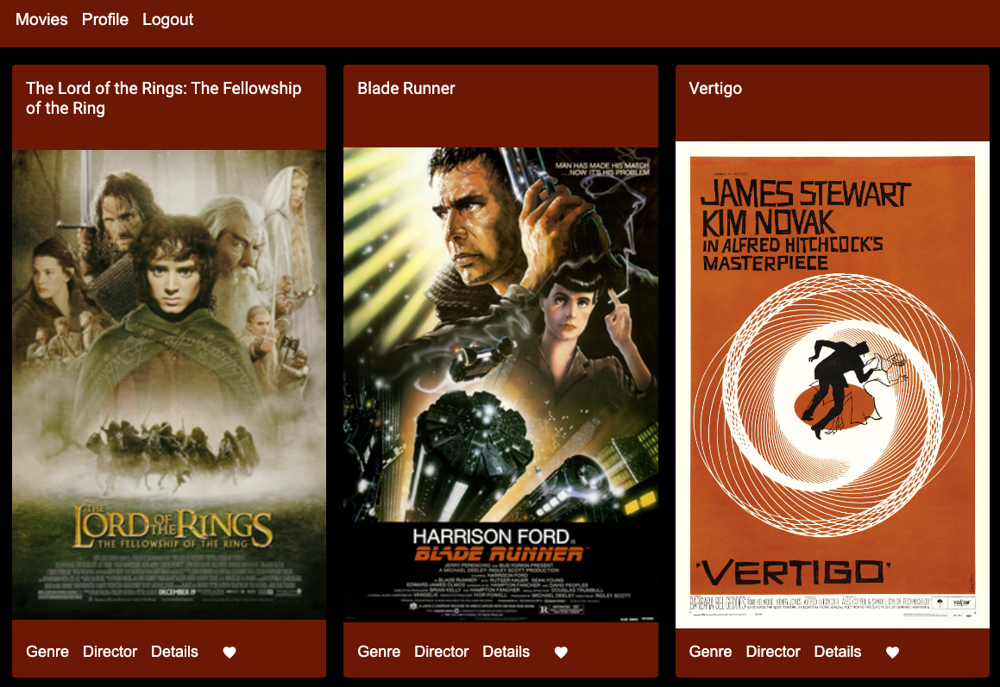

myFlix-Angular
myFlix-Angular is a full-stack movie database application designed for movie enthusiasts. It consists of a Angular-based frontend and a RESTful API backend, allowing users to browse, search, and manage their favorite movies. The app provides a seamless experience, enabling users to scroll through a movie list and manage their personal profiles.
Project Objective
myFlix-Angular is built to provide an engaging and user-friendly platform where movie lovers can:
- Browse a curated collection of different movies
- View detailed information about movies, directors and genres
- Create an account, manage their profile, and maintain a personal favorites list
- Enjoy a clean, responsive UI with intuitive navigation
Technology Used
Client
- Angular - For a dynamic and interactive user experience
- Angular Material - For a responsive and accessible Design
- Typescript - For maintaining the code
- Github Pages - For deploying and hosting the app
Backend
The client connects to movie API, a RESTful backend that provides real-time movie data and handles user authentication. It is built using:
- Node.js & Express - For handling API requests
- MongoDB & Mongoose - For storing and managing movie/user data
- JWT & Passport.js - For secure authentication
- CORS - To enable cross-origin API requests
- MongoDB Atlas - Cloud-based database storage
- Heroku - For backend deployment
Reflections on the project
This project introduced me to a new framework: Angular. Compared to React, Angular is a little more difficult to understand, but over time it became easier and more intuitive. I was also able to gain deeper knowledge of TypeScript in this project, which significantly improved code maintainability. The biggest challenge, however, was that the course materials here were very outdated, which is why I was not allowed to use the latest version of Angular, as I wanted to follow the course materials step by step. Since the Angular version I used here was still more up-to-date than the one in the course materials, I kept encountering problems. However, this allowed me to further develop my problem-solving skills.